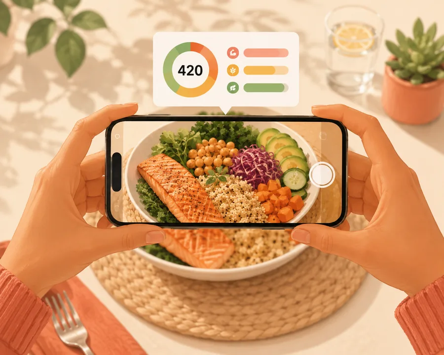
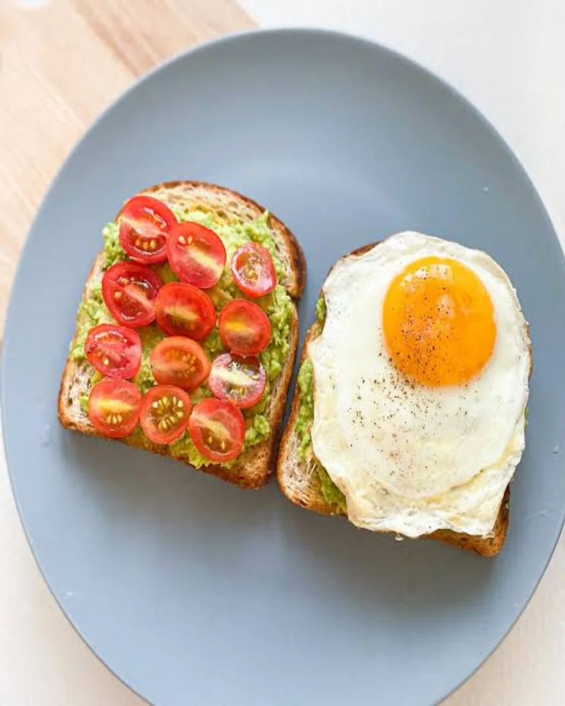
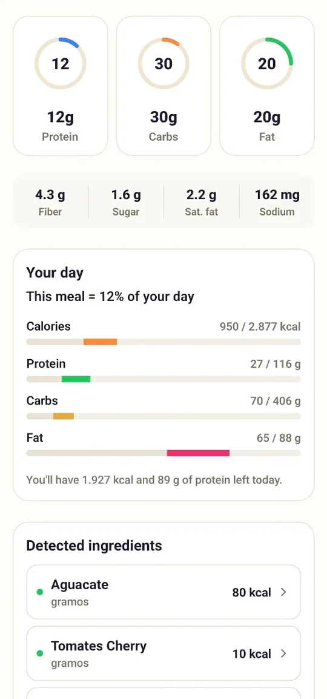
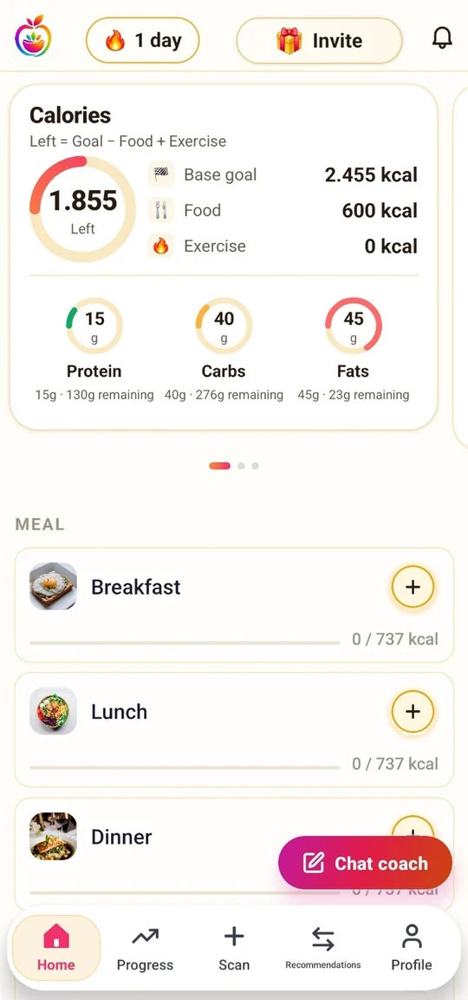
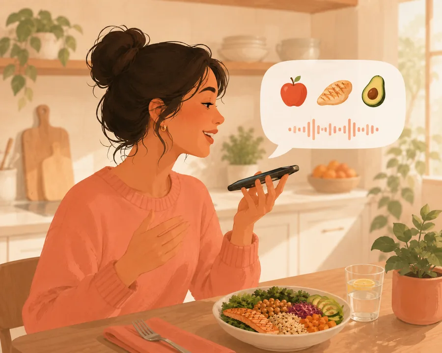
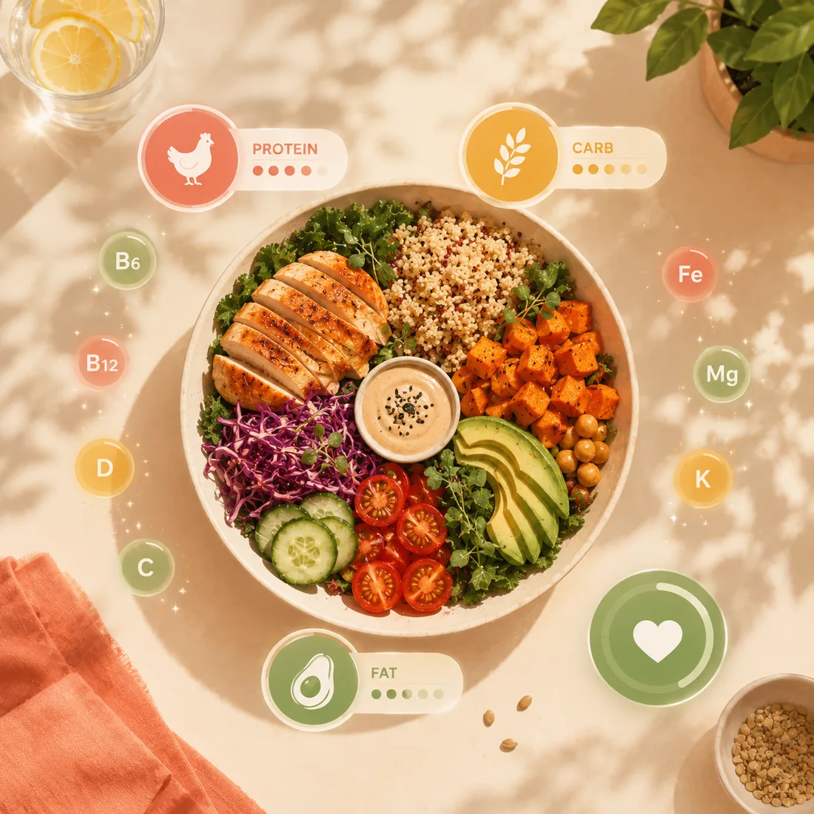

Foto
Fotografía tu plato
Una foto y la IA te devuelve calorías, macros y una puntuación de salud. Ajusta la ración o los ingredientes antes de guardar: tú siempre tienes el control.
Apunta con la cámara a cualquier comida y Fotocal te da las calorías, los macros, los micronutrientes y una puntuación de salud en segundos. Y Coach Kal, tu entrenador nutricional con IA, te ayuda a que la siguiente comida sea un poco mejor. Sin pesar nada, sin bucear en bases de datos.
DISPONIBLE EN Google PlayRegistrar una comida cuesta lo mismo que hacer una foto, porque no es nada más que eso. Estas son pantallas reales de la app.
Abre Fotocal y fotografía tu plato. Casero, de restaurante o las sobras de ayer: funciona igual.

En segundos identifica cada ingrediente, estima la ración y calcula calorías, macros, micronutrientes y una puntuación de salud.

La comida entra directa en tu diario y todo tu día se actualiza solo: calorías restantes, macros, agua, racha. Listo.

Foto, código de barras, carta o voz: Fotocal se adapta a ti. La forma más rápida en ese momento es siempre la correcta.

Una foto y la IA te devuelve calorías, macros y una puntuación de salud. Ajusta la ración o los ingredientes antes de guardar: tú siempre tienes el control.

Apunta al código de barras de cualquier producto y obtén su nutrición completa más una puntuación de salud clara — sabrás si merece la pena antes de meterlo en la cesta.

«Dos huevos y tostada con aguacate»: dilo en voz alta y queda registrado. Perfecto para mañanas con prisa, manos ocupadas o salir por la puerta.
¿En un restaurante? Apunta con la cámara a la carta y ve las calorías estimadas de cada plato — pide con los ojos abiertos.

Coach Kal ve tus comidas, tu agua, tu peso y tus objetivos, así que sus consejos van sobre tu día real y no sobre un plan genérico. Pregúntale qué cocinar con lo que hay en la nevera, qué pedir en un restaurante o por qué la báscula no se mueve esta semana.
Consejos según lo que has registrado hoy de verdad, no un plan enlatado.
Antojos a las 3 de la tarde o un «¿qué ceno?» a las 11 de la noche: Kal está despierto.
Respuestas prácticas y sin juzgar. Sin culpa y sin dietas extremas.

Las calorías son el titular, no la historia. Cada escaneo desglosa tus proteínas, carbohidratos y grasas, sigue las vitaminas y minerales que hay debajo y califica la comida con una puntuación de salud — más una sugerencia concreta para mejorarla.
Los grandes cambios son hábitos pequeños repetidos. Fotocal hace que repetirlos sea la parte fácil.
Registra cada vaso con un toque y mira cómo tu objetivo de hidratación se va llenando durante el día.
Una racha diaria convierte el registro en un hábito que de verdad querrás proteger.
Un empujón suave justo cuando sueles olvidarte — nunca pesado, siempre a tiempo.
Un minuto al día: cómo te sentiste, cómo dormiste, qué salió bien. Los patrones aparecen rápido.
Una vez por semana: cómo quedaron de verdad tus calorías y macros, qué aguantó y una o dos cosas que probar.
Tus pasos se sincronizan solos y cuentan en tu balance energético real de cada día.
Registra tu peso en segundos y Fotocal lo convierte en una línea de tendencia que ignora el ruido diario. Tu TDEE — las calorías que tu cuerpo quema de verdad — se actualiza sobre la marcha, para que tus objetivos sigan siendo honestos mientras tu cuerpo cambia.
Fotocal se diseñó en español desde el primer día: cada pantalla, cada respuesta de Coach Kal y cada informe semanal se leen con naturalidad en español y en inglés. Cambia de idioma cuando quieras; tus datos te siguen.
Una suscripción lo desbloquea todo: escaneos con IA ilimitados, Coach Kal sin límites, informes semanales, micronutrientes y todas las funciones premium. Dos planes, cero trampas.
Flexibilidad total: pruébalo mes a mes y cancela cuando quieras.
≈ 2,92 €/mes — ahorra un 58 %
Incluye la prueba gratis de 5 díasAsí queda Fotocal frente a los contadores de calorías más conocidos, según las funciones que cada app documenta públicamente.
| Función | Fotocal | Cal AI | MyFitnessPal | Yazio |
|---|---|---|---|---|
| Escaneo de comida por foto con IA | ✓ | ✓ | Premium+ | ✓ |
| Código de barras + puntuación de salud | ✓ | ✓ | Premium | ✓ |
| Escaneo de cartas de restaurante | ✓ | ✗ | ✗ | ✗ |
| Registro de comida por voz | ✓ | ✓ | Premium | ✗ |
| Coach nutricional de chat con IA | ✓ | ✗ | ✗ | ✗ |
| Puntuación de salud + mejoras sugeridas | ✓ | ✗ | ✗ | ✗ |
| Micronutrientes (vitaminas y minerales) | ✓ | ✗ | Premium | Premium |
| Diario de ánimo y hábitos | ✓ | ✗ | ✗ | ✗ |
| Informe semanal de progreso | ✓ | ✗ | Premium | ✓ |
| Sincronización de pasos (Health Connect) | ✓ | ✓ | ✓ | ✓ |
| Español e inglés | ✓ | Mejor en inglés | ✓ | ✓ |
| Precio anual típico | €34.99 | ≈$44 | $79.99 | $47.90 |
Las funciones y precios de la competencia se basan en información pública (2026) y pueden cambiar. Por ahora Fotocal es solo para Android.
Fotocal usa modelos de visión con IA actuales para identificar la comida y estimar la ración, y funciona lo bastante bien como para que los números te sirvan de verdad en el día a día. Es una estimación, no una medición de laboratorio: los platos mezclados, los guisos y todo lo que va en capas o tapado por una salsa son los casos más difíciles. Siempre puedes corregir la ración o los ingredientes antes de guardar, y aun corrigiendo sigue siendo mucho más rápido que buscar en una base de datos.
No. Estimar la ración desde la foto es justamente el objetivo. Si en una comida concreta quieres ser preciso puedes meter el peso a mano, pero nada te obliga.
Mucho más. Escanea el código de barras de un producto para ver su nutrición completa y una puntuación de salud clara antes de comprarlo, apunta con la cámara a la carta de un restaurante para ver las calorías estimadas de cada plato, o simplemente di en voz alta lo que has comido y Fotocal lo registra. Foto, código de barras, carta o voz: la que sea más rápida en ese momento.
Descargar Fotocal es gratis, y Premium empieza con una prueba gratis de 5 días para que lo pruebes todo: escaneos con IA ilimitados, Coach Kal sin límites, informes semanales y todas las funciones premium. Si cancelas antes de que termine la prueba, no pagas nada. Después, Premium cuesta 6,99 € al mes o 34,99 € al año.
Las suscripciones las gestiona Google Play, así que se cancelan ahí: Play Store → tu perfil → Pagos y suscripciones → Suscripciones. Si cancelas antes de que terminen los 5 días de prueba, no se te cobra nada.
Tus datos son tuyos. Nunca los vendemos y puedes eliminar tu cuenta y todo lo que contiene en cualquier momento.
En español y en inglés, tanto en la app como en esta web. Fotocal está construida primero en español, así que la experiencia en español es de primera — no una traducción pegada después.
Sí. Fotocal se conecta a Health Connect en Android, así que tus pasos se sincronizan solos y alimentan tu balance energético diario junto con tu TDEE.